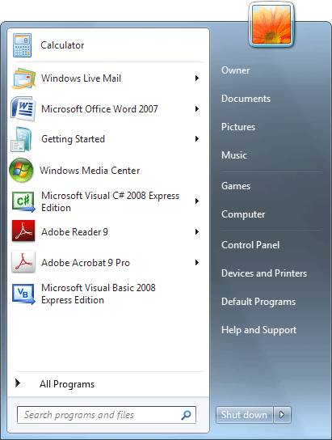

Free
computer Tutorials
|
Free
computer Tutorials
|
|
 back back |
Stay at Home and Learn | ||||
Which operating system do I have? |
|||||
|
To see which Operating System you have take a look at the bottom left of your computer screen. If you see a button that looks like this:
then you have Windows XP. The tutorials for your Operating System are here: If, however, you see a round button like this one:
then you have either Windows Vista or Windows 7. To check which you have (Vista or Windows 7) click the round button once with your left mouse button. You'll see a menu appear:  From the menu, click on Control Panel on the right-hand side. You'll then see a new screen appear. From this new screen, click on System and Security: When you click on System and Security, you'll be taken to a new screen: Click on System to see the following screen: As you can see, the computer above is running Windows 7 Home Premium. In any case, both Windows 7 and Vista tutorials are here: But you should now know which Operating System you have.
|